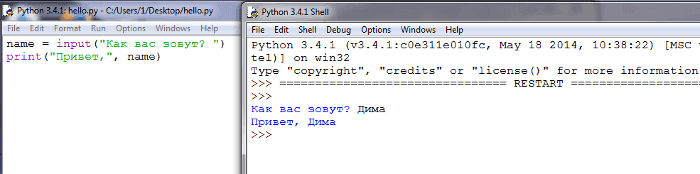

Сегодня мы напишем свою первую программу в среде разработки IDLE.
После загрузки и установки python открываем IDLE (среда разработки на языке Python, поставляемая вместе с дистрибутивом).
Здесь и далее буду приводить примеры под ОС Windows, так как именно она у меня сейчас под рукой.

Запускаем IDLE (изначально запускается в интерактивном режиме), после чего уже можно начинать писать первую программу. Традиционно, первой программой у нас будет "hello world".
Чтобы написать "hello world" на python, достаточно всего одной строки:
print("Hello world!")
Вводим этот код в IDLE и нажимаем Enter. Результат виден на картинке:

Поздравляю! Вы написали свою первую программу на python! (если что-то не работает).
С интерактивным режимом мы немного познакомились, можете с ним ещё поиграться, например, написать
print(3 + 4)
print(3 * 5)
print(3 ** 2)
Но, всё-таки, интерактивный режим не будет являться основным. В основном, вы будете сохранять программный код в файл и запускать уже файл.
Для того, чтобы создать новое окно, в интерактивном режиме IDLE выберите File → New File (или нажмите Ctrl + N).

В открывшемся окне введите следующий код:
name = input("Как Вас зовут? ")
print("Привет,", name)
Первая строка печатает вопрос ("Как Вас зовут? "), ожидает, пока вы не напечатаете что-нибудь и не нажмёте Enter и сохраняет введённое значение в переменной name.
Во второй строке мы используем функцию print для вывода текста на экран, в данном случае для вывода "Привет, " и того, что хранится в переменной "name".
Теперь нажмём F5 (или выберем в меню IDLE Run → Run Module) и убедимся, что то, что мы написали, работает. Перед запуском IDLE предложит нам сохранить файл. Сохраним туда, куда вам будет удобно, после чего программа запустится.
Вы должны увидеть что-то наподобие этого (на скриншоте слева - файл с написанной вами программой, справа - результат её работы):

Поздравляю! Вы научились писать простейшие программы, а также познакомились со средой разработки IDLE. Теперь можно немного отдохнуть, а потом начать изучать python дальше. Можете посмотреть синтаксис python, циклы или условия. Желаю удачи!